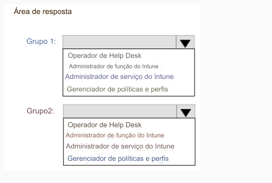

177- PONTO DE ACESSO
Você tem uma assinatura do Microsoft 365 que contém dois grupos de segurança chamados Grupo1 e Grupo2.
O Microsoft 365 usa o Microsoft Intune Suite.
Você usa o Microsoft Intune para gerenciar dispositivos.
Você precisa atribuir funções no Intune para atender aos seguintes requisitos:
• Os membros do Grupo1 devem gerenciar funções e atribuições do Intune.
• Os membros do Grupo2 devem atribuir aplicativos e políticas existentes a usuários e dispositivos.
A solução deve seguir o princípio do menor privilégio.
Que função você deve atribuir a cada grupo? Para responder, selecione as opções apropriadas na área de resposta.
NOTA: Cada seleção correta vale um ponto.
